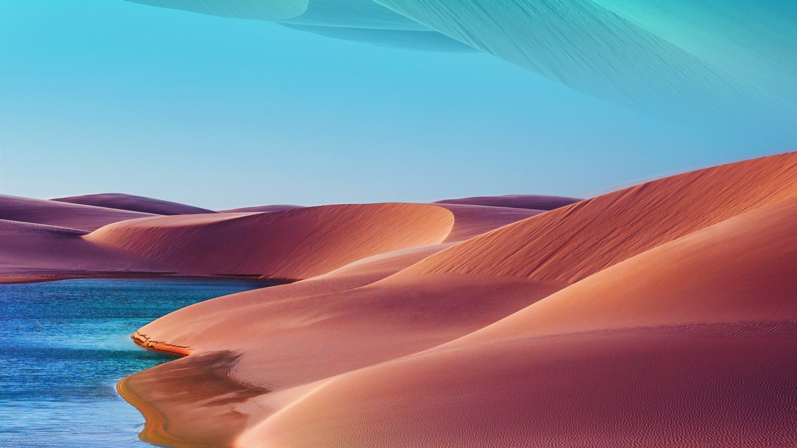

<!DOCTYPE html>
<html lang="en">
<head>
    <meta charset="UTF-8">
    <meta name="viewport" content="width=device-width, initial-scale=1.0">
    <title>Restaurant</title>
    <link rel="stylesheet" href="styles/style.css">
</head>
<body>
    <div id="content"></div>
<!-- 
    <div class="pimg1">
        <div class="ptext">
            <span class="border">
                Welcome the Sands of Luxury
            </span>
        </div>
    </div>

    <section class="section section-light">
        <h2>Our History</h2>
        <p>le Désert Aride was founded by 2 lost tourists name John Doe and David Guetta, along with their guide Mohammed bin Abubakr. After surviving for multiple days on nothing but insects and camel testicles, the three adventures decided to open up a chain of restaurants throughout the world's deserts. Today, their dream of exquisite desert food has come to life, with locations in the Sahara, Namib, Gobi, and other such deserts.</p>
    </section>

    <div class="pimg2">
        <div class="ptext">
            <span class="border">
                The Best Food, if we Find Any
            </span>
        </div>
    </div>

    <section class="section section-light">
        <h2>The Best Ingredients</h2>
        <p>We do our best to scavenge and find the best ingredients from the surrounding wasteland. This makes our dishes unique in that they are incredibly rare. Here at le Désert Aride, we strive for the finest food to leave a sandy taste in your mouth.</p>
    </section>

    <div class="pimg3">
        <div class="ptext">
            <span class="border">
                Come Get Lost in the Sands of Time
            </span>
        </div>
    </div>

    <section class="section section-light">
        <h2>Enjoy Your Stay</h2>
        <p>Upon wandering into le Désert Aride, you will be greeted by a wandering nomad who will designate a spot for you to sit down. At this point you will point at any living thing you can find, and we will do our best to capture it and cook it for you. Such is the experience of le Désert Aride.</p>
    </section> -->
    
    <!--  -->
    
    
    
    
    <script src="main.js"></script>
</body>
</html>